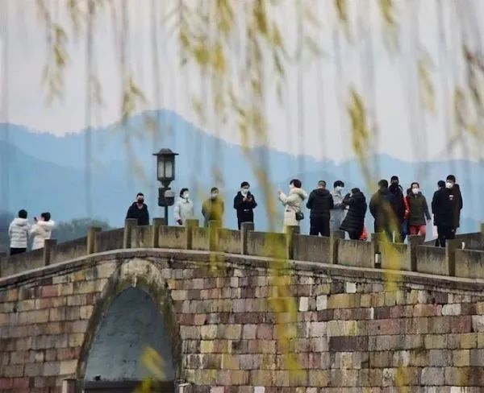

旅游业的“惊魂”15天
原文链接 备份链接 《创新经济战疫指南》，是燃财经在新型肺炎疫情期间推出的特别栏目，关注创新经济企业遇到的新难题、商讨应该采取的新对策，希望能够帮助中小企业一起战胜挑战、把握机会。本文是第6期。查看前5篇请点击《哪些行业正在逆势爆发？》《 …
澎湃新闻记者 钱成熙
2月23日上午，一段江西萍乡武功山大量游客聚集的视频引发了许多关注。视频中，武功山景区内游人如织，人挨人排着队。当天下午，武功山管委会紧急发表通告，表示从24日起，从24日起，景区下调人数限流至3000人，关闭线下售票窗口，请游客在线上预定购票，达到3000张上限即关停网上售票。

游客排队买票
这正是目前景区开放情况的一个缩影。春日渐近，梅花、早樱已经次第开放，几乎足不出户一个月后，许多人的心里都蠢蠢欲动。
钟南山在接受央视采访时所说的，“开放景区我是觉得很必要。景区本来就是个开阔的、空气新鲜的地方……对人们的健康心理都有好的作用。”也给大家打了一针强心剂。从2月20日左右开始，各地都陆续传来了景区恢复开放的消息。到2月28日为止，全国已有超过300个景区开放。
针对这个问题，在2月26日召开的国务院联防联控机制发布会上，文化和旅游部市场管理司司长刘克智表示，旅游景区具有“人员聚集性强，人员流动性大”的特点，旅游景区的恢复开放，应当坚持分区分级的原则，对旅游景区开放的条件和必要性进行评估，不宜搞一刀切。疫情高风险地区旅游景区暂缓开放，中风险低风险地区旅游景区由当地党委政府来决定是否开放。
在景区恢复开放之初，许多地方都出现了“扎堆”现象，除了文章开头提到的武功山景区外，上个周六也就是2月22日，刚刚开放的北京香山公园甚至还发生了拥堵。2月24日，香山公园关闭了除香泉环岛停车场以外的所有所有停车场，实施游客限流。率先于2月19日开放的杭州西湖景区也在一天内迎来了超过5000人。“南宁疫情800人扎堆赏山樱花”还登上了微博热搜，少数游客不戴口罩游览的照片也广为传播。

断桥迎来疫情后首批游客
此前，“景区毕竟是企业，需要生存发展，在做好疫情防控基础上稳步复工，也是合情合理的。”中国旅游研究院景区研究专家战冬梅说。不过，“景区要采取谨慎态度，根据所在地区防疫实际，完善防疫制度体系，以保证员工和游客安全为必要开放前提。”
这种情况下，旅游专家、中国未来研究会旅游分会副会长刘思敏通过澎湃新闻建议，“景区做好消毒的工作，游客也要做好自身的防护。”他认为，景区需要谨慎判断当地形式，因地制宜地开放景点。他不建议室内封闭景区如博物馆等过早开放，室外的自然景区可以循序渐进地开放。
此外，他提出，在游览管理方面，应采取分时段、间隔性办法安排游客入园，控制游客数量，落实实名登记，积极利用大数据和智能手段，做好游客信息动态监测，并加强景区巡查力度。
已开放景区如何防护和限流
那么目前，各景区的开放情况和限流措施如何呢？
2月27日，北京颐和园开始实施分时入园、预约购票措施。其中要求，购票游客至少提前一天通过“颐和园”官方微信公众号进行预约，购票成功的游客需持身份证原件验证入园。
网络预约分为上下午两个时间段，按照不超过瞬时承载量30%进行游客量管控。已经关闭的园中园景点、封闭院落、堂食餐点保持关闭现状。游客入园时，配合体温测量，佩戴口罩，分散游览，保持1.5米以上的安全间距。园内活动不聚集，不扎堆，不集中锻炼健身，不随地吐痰。
北京市公园管理中心新闻发言人张亚红也表示，天气转暖后居民出行意愿上升。不过她建议大家再坚持一段时间，等到防控达到阶段性成果，会逐步恢复公园游览。
同天开放的南岳衡山景区，则要求游客们在大巴上“隔位就坐”，此外，游客还需要经过红外热成像监控、人员消毒、信息登记等一系列严格的防控流程后，才能顺利进入景区。
衡山景区按照日接待量不超过景区最大承载量的50%、瞬间流量不超过最大瞬时流量的30%来控制人流，每天还对公共区域进行4次消毒，对游客高接触、高密集的区域每2小时消1次毒。

接驳巴士上分开就坐
武陵源景区在27日恢复开放的首日共接待了454位客人。开放初期，武陵源实施“分时预约”制度，恢复开放初期时间为每天8:30-16:00，规定单日接待量不超过1万人，所有进山游客实行入园必检和限流游览，景区交通运输工具隔位乘坐、客容量减半，百龙天梯不超过30%。
景区里还成立了135人的疫情防控引导员队伍，为游客提供防疫“管家”式服务。“本区域已消毒”告示出现在售票窗口、检票口、自动取票机、厕所等公共设施区域。游客服务中心还有酒精棉球、消毒液等防疫物品供游客免费使用。
陕西要求开放的室外景区必须对游客测体温、扫健康码，公用设施日消毒不少于4次，按日载量30%限流，提出了开放30条措施。
还有一些景区则推出优惠措施。在石窟景区中率先开放的龙门石窟已于2月24日开放，至6月30日为止实行门票半价优惠。丽江古城和玉龙雪山已于2月20日面向本省游客和全国非重点疫区游客有限开放，玉龙雪山实行门票半价。2月29日到3月29日，西安城墙景区和大唐芙蓉园景区免费对外开放。贵州省黔西南州景区景点从2月23日起到3月31日也全部免费开放。
景区游客缓慢回流
虽然在景区刚恢复开放时出现了游客“扎堆”现象，但目前大部分开放景区的游客回流情况可称相当理性，黄山开放首日仅有一位游客包场的新闻在社交网络上广为传播，让许多人“羡慕不已”。而许多景区的游客数量在每日数百人左右的基础上缓慢增长。

婺源油菜花季到来，往年花田已是人山人海
2月23日开放的黄果树瀑布景区，至2月26日，景区每日接待游客数分别为26、135、229、492人。婺源95%的景区已开放，油菜花季也已到来，不过相对于过去花季人山人海的景象，如今的婺源可称清净，日均接待量约为2000人。景区负责人预计，按照这一趋势，预计今年三、四月份婺源也不会有太多客流量。
黄果树瀑布游人寥寥
丽江古城管委会告诉媒体，景区内餐饮、民宿商户在严格执行疫情期间措施的前提下，可以开门营业，而酒吧、历史文化展示馆及文化院落等人员密集场所暂不恢复营业和开放。
青海湖在开放首日2月26日迎来了56名游客，景区说，这个数字已经“超过了预期”。
刘思敏表示，现阶段游客不多有几方面原因，一是疫情还未过去，大众尚未做好出门游玩的准备。二是景区的配套设施尚未开放，室内景点关闭，许多室外景点的短驳车等服务也未恢复，同样没有开放的还有游客们热衷的小吃等餐饮娱乐设施。
三月起更多景区开放，谨防“旅游性感染”
更多景区将在3月初集中开放。如云冈石窟发布公告于3月1日开放，但暂不接待团队游客。此外还有乔家大院、大明山景区、张掖七彩丹霞景区等，都将在3月1日开放。
2月25日，文旅部印发了《公共图书馆、文化馆（站）恢复开放工作指南》，就公共文化场馆恢复开放提出具体指导意见。提出坚持分区分级，不搞“一刀切”。疫情高风险地区继续闭馆，中低风险地区恢复开馆工作，由当地党委政府决定。
国家文物局也表示，博物馆等场所对低风险区，经地方政府批准后可有序恢复开放。对中风险区，室外露天场所可逐步恢复开放，室内封闭展馆、展厅等区域原则上暂不开放，对高风险区，暂不开放。中低风险区的开放单位原则上均不接待团体参观。
不过，在逐步解封的声音中，也有反对者，比如世界旅游城市联合会专家委员会副主任张辉和中国旅游改革发展咨询委员会委员孙小荣便认为，当下疫情研究尚不明朗，旅游消费并非国民生活必须性消费，人群聚集反而提升了疫情反扑的潜在风险，一旦出现“旅游性感染”，只怕得不偿失。
确实，对于旅行者来说，独享的美景、优惠的价格带来的吸引力是不言而喻的，但看不见的风险也不可小觑。评估风险、审慎出行，是每一个人在出行之前所应该做的。
本期编辑 常琛
推荐阅读


原文链接 备份链接 《创新经济战疫指南》，是燃财经在新型肺炎疫情期间推出的特别栏目，关注创新经济企业遇到的新难题、商讨应该采取的新对策，希望能够帮助中小企业一起战胜挑战、把握机会。本文是第6期。查看前5篇请点击《哪些行业正在逆势爆发？》《 …
原文链接 备份链接 疫情对经济带来负面影响的同时，也促使相关行业加速升级。此次疫情或成零售行业进化和变革的“催化剂”，加快新零售模式崛起 2月14日，武汉武昌区街头的蔬果店。 摄影／《财经》记者 王小 文 | 周景彤 叶银丹 2019 …
原文链接 备份链接 Photo by lucas law on Unsplash 记者 郑萃颖 “ 签证行业的恶性竞争，是导致百程无法坚持的主要原因，而新冠病毒疫情的爆发加速了这一进程，直接导致资金出现问题。 ” 2月29日上午，一张百程 …
原文链接 备份链接 爱知县蒲郡市的老字号日式旅馆“富士见庄”图片来源：共同社 记者：田思奇 “ 今年1月，日本面向主要国家和地区的出口与上年同期相比齐齐下滑，2月起疫情蔓延则雪上加霜，或将造成日本贸易进一步萎缩，日本经济的停滞感日益明显。 …
原文链接 备份链接 来源：上海市委宣传部 “ 自新冠肺炎疫情发生以来，上海文化企业主动承担社会责任、积极作为，捐款捐物，踊跃参与各类志愿活动，表现出了良好的精神风貌和社会担当。 ” 自新冠肺炎疫情发生以来，上海文化企业主动承担社会责任、积 …